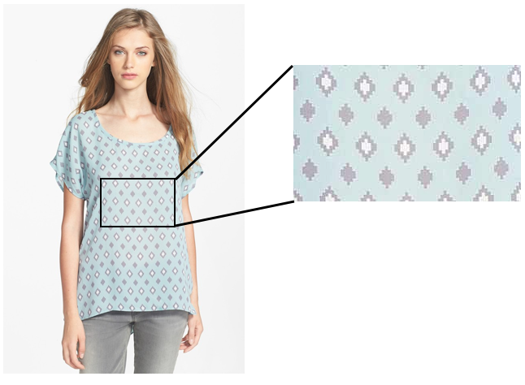
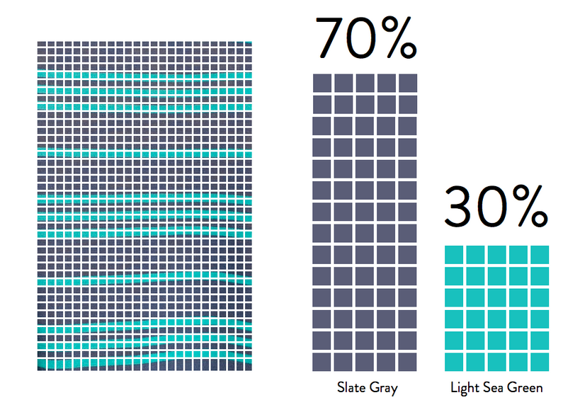
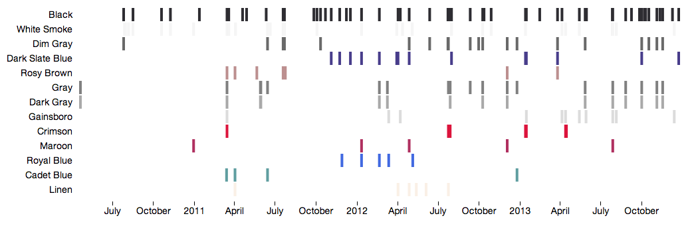
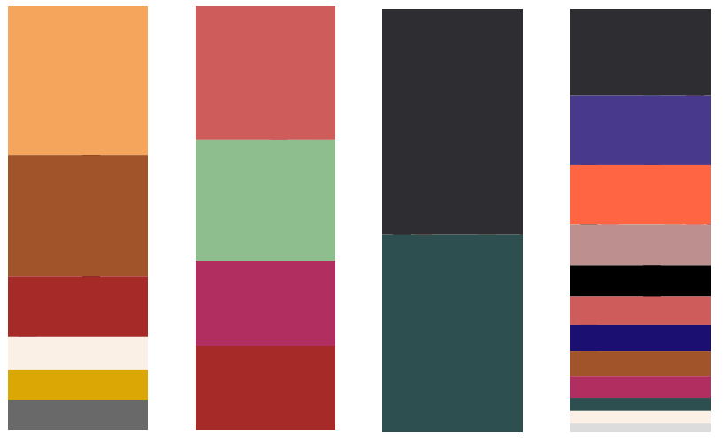
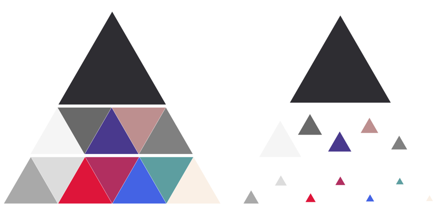
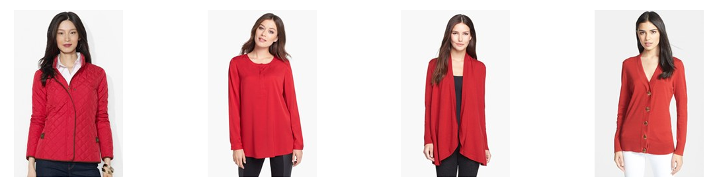
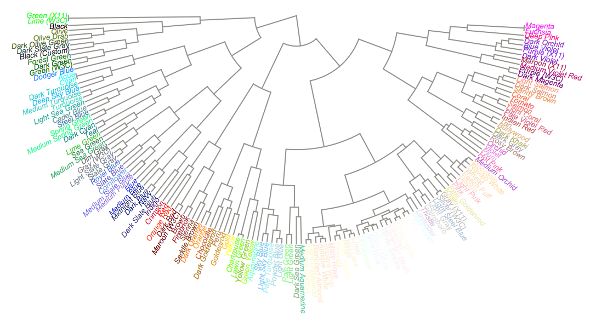
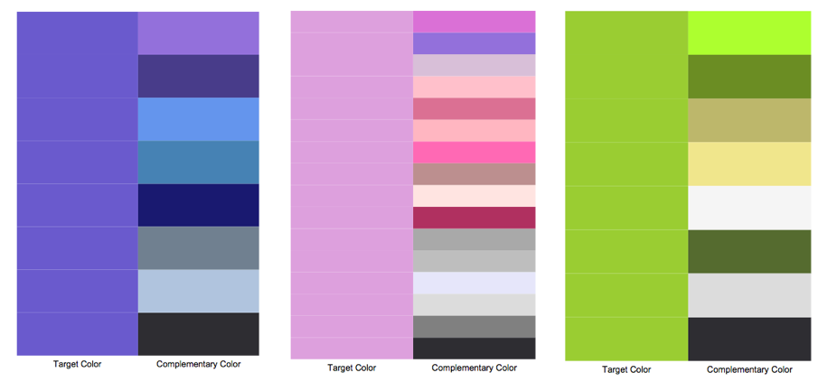
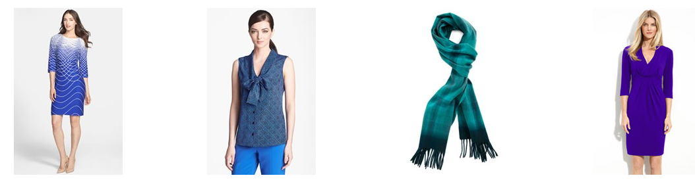
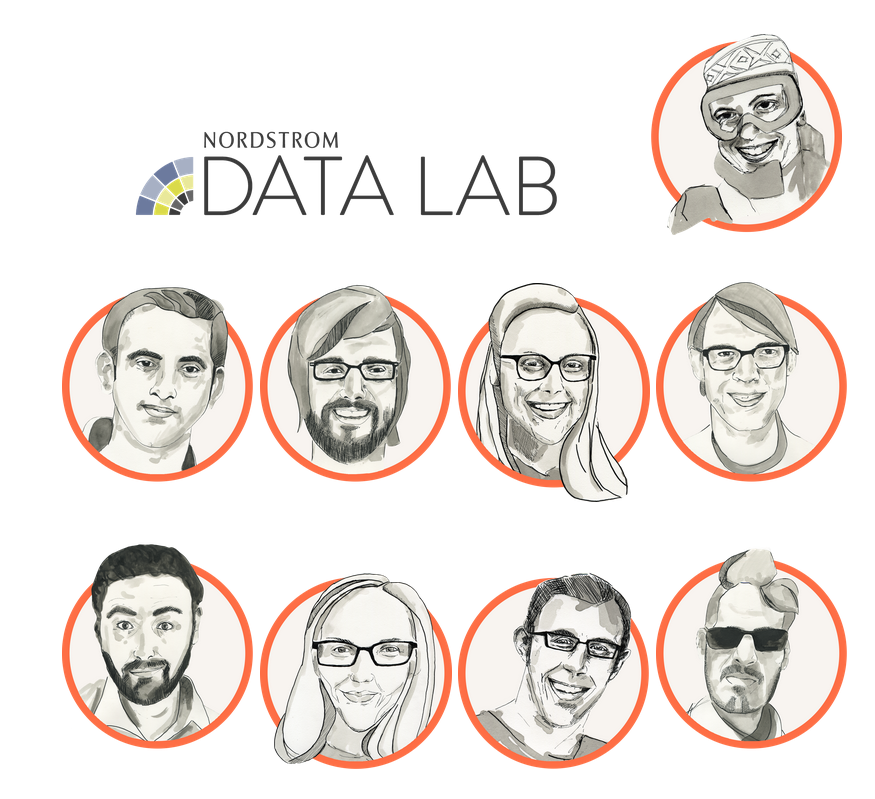

Behind the Scenes
How do we go from the entire product catalog - down to an individuals color profile?
Let's dive in!
From catalog to Color Trends
Swatch to Color Segments
This color analysis capability is enabled by the hard work and high quality output produced by the photography team.
Along with taking pictures of every product Nordstrom sells, they also hand curate a database of swatches - which provides a high level of detail of what the product looks like.
Swatches allow us to easily analyze each product
We take these swatches and analyze them using algorithms that can quantify accurately all the colors used in the product.
Converting swatches to color amounts
With this database of colors mapped to products, we are ready to analyze a customers purchases to uncover their color patterns.
A Timeline of Color
For each purchase, we add one or more colors to a customer's Color Trends. This creates a timeline of color for each customer.
A customer's Color Timeline
Combining all the colors for a customer, we get a Color Fingerprint - a unique identifier of a customer based on their colors.
Color Fingerprints from four customers
From there, we add our own visual flair to arrive at the Color Triangle - a customer's Color Trends.
An example of a customer's color trend
Complementing Your Colors with Color Recommendations
Once we have a customer's Color Trend, we need to provide personal recommendations based on their profile. To both supplement and complement their current colors
Suggesting products of the same color is straight-forward - thanks to Recommendo - our recommendation engine.
Want more red in your wardrobe? You got it!
To find garments with colors to complement your existing wardrobe, we had to dive deeper into the data.
Finding 'Nearby' Colors
Did you know the distance between colors can be measured? It's true! Colors can be represented by a series of numbers. These numbers can be compared to one another to find how close or far colors are from one another. With this, you can create a map of colors.
A detail of the color map
Combining this color map with our swatch analysis, we can find nearby colors that occur in many products. With enough data, we can generate complementary colors for the entire color spectrum.
Complementary colors
Using data from actual products lets us get an accurate measure of what colors go well with one another - that changes as fashions change. We are harnessing the capabilities of garment producers and fashion setters to allow us to determine if two colors are a good complement.
We use actual fashion data to find what colors go well together
It Takes a Village
A lot of hands went into the creation of this interactive piece. From the photography studios, to the Innovation Lab mockups, to the Data Lab analysis and implementation, it really takes a group of differently skilled individuals to make something beautiful.
The Data Lab is a diversely skilled group